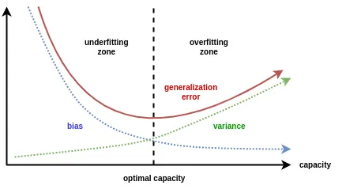
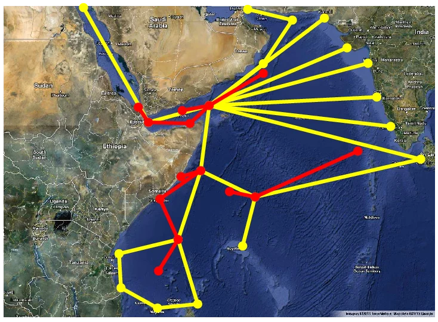
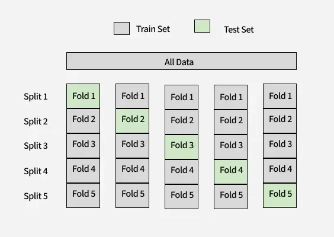
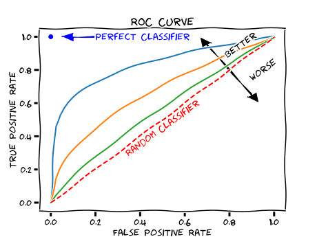
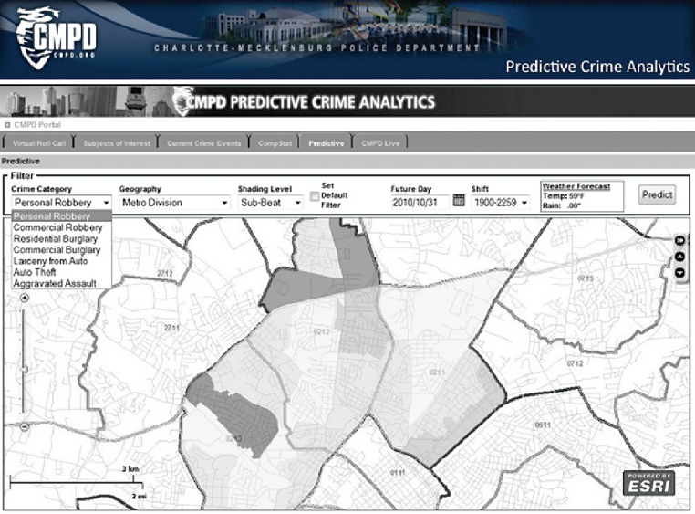
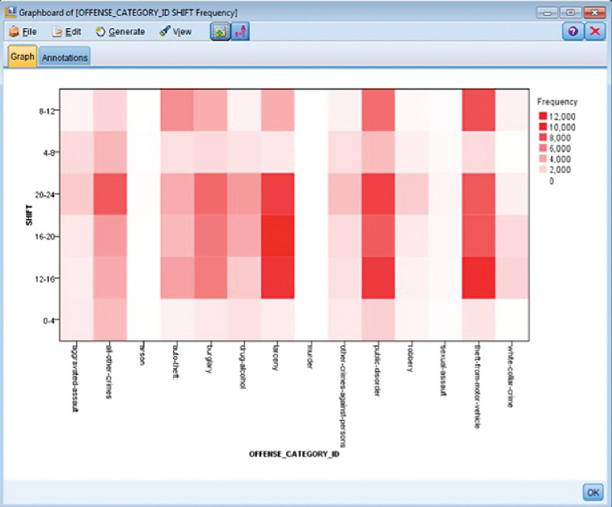
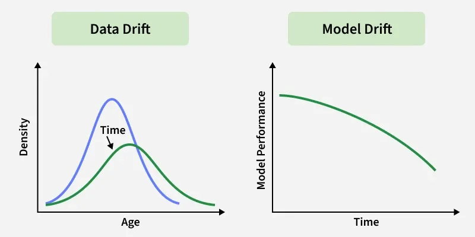

Evaluating Models, Review Processes & Updating Models
Hong Kong Shue Yan University
2026-01-01
ADS320 · Introduction to Data Mining · Week 11
Evaluating Models · Review Processes · Updating Models
Instructor
Dr. Ruiwu Niu
Department
Applied Data Science
Term
2025–2026 · Week 11
Phase 0 · 10 min
🔁 Recap: Week 10
Overfitting · Model Tuning
Part I · 40 min
📊 Evaluating Model & Results
Confusion Matrix · Cross-Validation · ROC
Part II · 20 min
🔎 Review Processes
CRISP-DM · Goal Alignment · Significance
Part III · 20 min
🔄 Updating the Model
Concept Drift · Iterative Cycles · Refreshing
AT2 · 20 min
💻 Advanced Model Implementations
Nested CV · Imbalanced Evaluation
Exercise · 10 min
🧪 In-Class Exercise
Hands-on evaluation practice
Course outline: ADS320, Week 11. Readings: McCue (2015), Chs. 8 & 12; Tan et al. (2019), Ch. 3.
The Core Problem
A model that memorises training data rather than learning generalisable patterns.
Bias–Variance Trade-off
| Bias | Variance | |
|---|---|---|
| Underfit | High | Low |
| Overfit | Low | High |
| Ideal | Low | Low |

💡 Bridge to Today: We tuned our model last week. But how do we know if it is truly good? → Evaluation
Tan, P.-N., Steinbach, M., Karpatne, A., & Kumar, V. (2019). Introduction to data mining (2nd ed., §3.4). Pearson. · McCue, C. (2015). Data mining and predictive analysis (2nd ed., Chs. 11, 14). Elsevier.
✂️ Pruning
🧮 Regularisation
🌳 Ensembles
🔑 Key Insight: After tuning, we need a separate, clean test set to estimate true generalisation performance. Using the same data for tuning and testing leads to optimistically biased estimates.
Quick Check (1 minute)
“What is the purpose of a validation set, and how is it different from a test set?”
Tan et al. (2019). Introduction to data mining (2nd ed., §3.5). Pearson. · McCue (2015). Data mining and predictive analysis (2nd ed., Chs. 11, 14). Elsevier.
Training / Validation / Test Split
| Partition | Purpose |
|---|---|
| Training | Learn model parameters |
| Validation | Tune hyper-parameters |
| Test | Final unbiased evaluation |
⚠️ Never peek at the test set during model selection. Any exposure creates bias.
Complexity vs. Generalisation
\[\hat{\varepsilon}_{gen}(m) = \varepsilon_{train}(m, D_{train}) + \Omega(\text{complexity}(m))\]
Where \(\Omega\) is the regularisation/complexity penalty term.
📌 Bridge: Today we formalise how to measure this generalisation gap — the core task of evaluation.
Tan et al. (2019). Introduction to data mining (2nd ed., §§3.5–3.6, Eq. 3.11). Pearson.
“Overall accuracy ≠ model goodness”
The Piracy Paradox (McCue, 2015)
In 2008, ~33,000 vessels passed through the Gulf of Aden. Only 122 were attacked (< 0.4%).
A model that always predicts “No Attack” achieves >99% accuracy… but is completely useless for maritime security.
The Takeaway

💡 Analogy: A smoke detector that never fires is 100% accurate on a quiet day — but catastrophically wrong when it matters.
McCue, C. (2015). Data mining and predictive analysis: Intelligence gathering and crime analysis (2nd ed., §§1.5.1, 8.1). Elsevier.
Case: Armed Robbery → Aggravated Assault (McCue, 2015)
Only < 5% of armed robberies escalate to aggravated assault.
A “smart” model with one single rule:
“Robbery will NEVER escalate” → 95% accuracy
… detects zero real threats. Useless for prevention.
Three Critical Questions to Ask:
Event Frequency Table
| Scenario | Base Rate | “Always No” Accuracy |
|---|---|---|
| Piracy | 0.37% | 99.63% |
| Robbery→Assault | 4.8% | 95.2% |
| Cancer screening | 1% | 99% |
⚠️ High accuracy = low event frequency
🔑 Solution: Use the Confusion Matrix to break down error types — introduced in the next section.
McCue, C. (2015). Data mining and predictive analysis (2nd ed., §1.5.1). Elsevier. · Tan et al. (2019). Introduction to data mining (2nd ed., §3.1, Eq. 3.2). Pearson.
The Three-Way Partition
Full Labelled Dataset D
┌─────────────────────────────────────────────────┐
│ D_train (70–80%) │ D_test (20–30%) │
│ ┌─────────┬─────────┐ │ │
│ │ D_tr │ D_val │ │ Final evaluation │
│ │ (learn) │ (tune) │ │ (touch ONCE only) │
│ └─────────┴─────────┘ │ │
└─────────────────────────────────────────────────┘| Partition | Role |
|---|---|
| Training | Learn model parameters |
| Validation | Select hyper-parameters |
| Test | Unbiased performance estimate |
Holdout Method (Tan et al., 2019 §3.6.1)
Risk of Small Test Sets
Smaller \(D_{test}\) → wider confidence interval → unreliable \(\hat{\varepsilon}_{test}\).
McCue (2015): skewed age distributions between training and test samples can compromise validity.
Why Holdout Alone is Insufficient
A single holdout split gives a high-variance estimate — different random splits yield different results. Cross-validation solves this by averaging over multiple splits.
\(k\)-Fold Cross-Validation (Tan et al., 2019 §3.6.2)
\[\hat{\varepsilon}_{CV} = \frac{1}{k} \sum_{i=1}^{k} \varepsilon_i\]
Leave-One-Out (LOO): \(k = n\) — maximum data use, very high compute cost.

⚖️ Stratified CV: Preserves class distribution in each fold. Always use for imbalanced datasets to avoid folds with zero positive examples.
📌 Rule of thumb: \(k = 10\) provides a good bias-variance tradeoff for most datasets (Tan et al., 2019).
Tan, P.-N., Steinbach, M., Karpatne, A., & Kumar, V. (2019). Introduction to data mining (2nd ed., §3.6.2, Eq. 3.14). Pearson.
The Problem with Standard CV
If we use CV both to tune hyper-parameters and to estimate generalisation error, we introduce optimistic bias — the test performance estimate is too good.
Solution: Nested CV (Tan et al., 2019 §3.6.2)
Outer Loop (evaluation — k_outer folds):
┌─────────────────────────────────────────┐
│ Outer train + val │ Outer test fold │
│ ┌──────────────────────────────────┐ │
│ │ Inner Loop (hyper-param select) │ │
│ │ k_inner-fold CV on outer train │ │
│ └──────────────────────────────────┘ │
│ → Best params → evaluate on outer test │
└─────────────────────────────────────────┘Report mean ± std of outer test scores.
When to Use Nested CV
Use nested CV when you need to: 1. Select hyper-parameters (inner loop) 2. Report an unbiased error estimate (outer loop) 3. Publish or deploy with confidence
Python Example (AT2 Preview)
from sklearn.model_selection import (
cross_val_score, GridSearchCV, KFold
)
from sklearn.tree import DecisionTreeClassifier
# Outer CV loop (evaluation)
outer_cv = KFold(n_splits=5, shuffle=True, random_state=42)
# Inner CV loop (hyper-param tuning)
inner_cv = KFold(n_splits=3, shuffle=True, random_state=0)
param_grid = {"max_depth": [3, 5, 7, None]}
clf = GridSearchCV(
DecisionTreeClassifier(), param_grid, cv=inner_cv
)
# Nested CV score — unbiased estimate
scores = cross_val_score(clf, X, y, cv=outer_cv,
scoring="f1_macro")
print(f"Nested CV F1: {scores.mean():.3f} ± {scores.std():.3f}")Tan, P.-N., Steinbach, M., Karpatne, A., & Kumar, V. (2019). Introduction to data mining (2nd ed., §3.6.2). Pearson. · Scikit-learn Developers. (2024). Cross-validation: Evaluating estimator performance. https://scikit-learn.org/stable/modules/cross_validation.html
Definition
A confusion matrix tabulates predicted vs. actual class labels for all test instances — giving a complete picture of model behaviour.
| Predicted: YES | Predicted: NO | |
|---|---|---|
| Actual: YES |
TP True Positive |
FN False Negative |
| Actual: NO |
FP False Positive |
TN True Negative |
TP & TN = correct · FP & FN = errors
\(\text{Accuracy} = \dfrac{TP + TN}{TP + FP + FN + TN}\)
Real Example: McCue (2015, Table 8.2)
53 cases, 89% overall accuracy:
| Pred: Event | Pred: No Event | |
|---|---|---|
| Actual: Event | 45 (TP) | 2 (FN) |
| Actual: No Event | 4 (FP) | 2 (TN) |
Total = 53 · Accuracy = (45+2)/53 ≈ 88.7%
⚠️ 89% sounds great — but FN = 2 missed real events. In crime prediction, each FN is a missed threat. Accuracy alone hides this.
💡 Analogy: A test for a rare disease that always says “healthy” is 99% accurate — and kills patients.
Tan, P.-N., Steinbach, M., Karpatne, A., & Kumar, V. (2019). Introduction to data mining (2nd ed., §3.1, Table 3.4, Eq. 3.2). Pearson. · McCue, C. (2015). Data mining and predictive analysis (2nd ed., §8.2, Table 8.2). Elsevier.
McCue (2015), Tables 8.2–8.5 — Which model would you deploy?
Model A
Table 8.2
| P̂ | N̂ | |
| P | 33 | 5 |
| N | 1 | 14 |
Acc: 88.7%
High TP, few FN ✓
Model B
Table 8.3
| P̂ | N̂ | |
| P | 23 | 15 |
| N | 1 | 14 |
Acc: 70% ↓
93% true event recall ✓
Model C
Table 8.4
| P̂ | N̂ | |
| P | 148 | 38 |
| N | 5 | 5 |
Acc: 78% ↑
50% recall = coin flip ✗
Model D
Table 8.5
| P̂ | N̂ | |
| P | 151 | 33 |
| N | 3 | 6 |
Acc: 88.7%
100% recall, 0 TN ⚠️
🔑 Key Lesson: Models B and C have the same overall accuracy (≈70–78%), yet Model C is nearly useless — it detects only 50% of real events. Know your error costs before choosing a model. (McCue, 2015)
McCue, C. (2015). Data mining and predictive analysis (2nd ed., §8.2, Tables 8.2–8.5). Elsevier.
| Deployment Goal | Optimise | Reason |
|---|---|---|
| Crime prevention deployment | Recall | Missing a real threat is costly |
| Automated screening / alerts | Precision | False alarms waste resources |
| Medical diagnosis | F₁ / AUC | Both miss & false alarm costly |
Tan, P.-N., Steinbach, M., Karpatne, A., & Kumar, V. (2019). Introduction to data mining (2nd ed., §3.6.3). Pearson. · McCue, C. (2015). Data mining and predictive analysis (2nd ed., §8.2). Elsevier.
Prior Probabilities (McCue, 2015 §8.4)
Most real-world datasets are imbalanced. The model’s default threshold assumes equal class priors — which is often wrong.
Setting priors manually: - Match the observed event frequency in the target population - Example: if 3% of cases are positive, set prior = 0.03 - Prevents the model from defaulting to the majority class
Posterior after prior adjustment: \[P(C_i \mid \mathbf{x}) \propto P(\mathbf{x} \mid C_i) \cdot \pi_i\]
where \(\pi_i\) is the prior for class \(C_i\).
Cost-Sensitive Adjustment (McCue, 2015 §1.5.1)
Assign asymmetric misclassification costs:
\[\text{Expected Cost} = C_{FN} \cdot FN + C_{FP} \cdot FP\]
Set \(C_{FN} \gg C_{FP}\) when missing a real event is catastrophic.
Flood model example (McCue, 2015):
A 7% false alarm rate (FP) is acceptable — evacuation is a manageable cost. But missing a real flood (FN) risks lives. Therefore: high \(C_{FN}\), tolerate higher FP.
💡 In SPSS Modeler: adjust Prior Probabilities tab and Misclassification Costs matrix in the model node settings.
McCue, C. (2015). Data mining and predictive analysis (2nd ed., §§1.5.1, 8.4). Elsevier. · Tan et al. (2019). Introduction to data mining (2nd ed., §6.7). Pearson.
Receiver Operating Characteristic Curve
Plot TPR (Recall) vs FPR (1 − Specificity) across all classification thresholds \(\theta \in [0, 1]\).
\[\text{TPR}(\theta) = \frac{TP(\theta)}{TP(\theta) + FN(\theta)}, \quad \text{FPR}(\theta) = \frac{FP(\theta)}{FP(\theta) + TN(\theta)}\]
AUC = Area Under the ROC Curve ∈ [0.5, 1.0]
| AUC | Interpretation |
|---|---|
| 1.0 | Perfect classifier |
| > 0.9 | Excellent |
| 0.7 – 0.9 | Good |
| 0.5 | Random guess |

🎯 Choosing a threshold: The operating point on the ROC curve is selected based on deployment cost ratio \(C_{FP} / C_{FN}\) — not just maximum accuracy. (Tan et al., 2019 §6.11.4)
Tan, P.-N., Steinbach, M., Karpatne, A., & Kumar, V. (2019). Introduction to data mining (2nd ed., §§6.11.4, 10.3). Pearson.
Why CIs Matter
A single accuracy number without uncertainty bounds is misleading. Small test sets yield wide intervals — two models may appear different but are statistically indistinguishable.
Binomial Confidence Interval (Tan et al., 2019 Eq. 3.16)
Let \(\hat{p} = X/N\) be the estimated accuracy (\(X\) correct, \(N\) total).
\[\hat{p} \pm z_{\alpha/2} \sqrt{\frac{\hat{p}(1 - \hat{p})}{N}}\]
At 95% confidence: \(z_{\alpha/2} = 1.96\)
Example: \(\hat{p} = 0.80\), \(N = 100\)
\[0.80 \pm 1.96\sqrt{\frac{0.80 \times 0.20}{100}} = 0.80 \pm 0.078\]
95% CI: [72.2%, 87.8%]
Effect of Sample Size on CI Width
| \(N\) | \(\hat{p} = 0.80\) | 95% CI |
|---|---|---|
| 30 | 0.80 | [65%, 91%] |
| 100 | 0.80 | [72%, 88%] |
| 500 | 0.80 | [76%, 84%] |
| 1000 | 0.80 | [77%, 82%] |
⚠️ With \(N = 30\): CI spans 26 percentage points — you cannot reliably rank two models with such a small test set.
📌 Rule of thumb: Aim for \(N_{test} \geq 200\) for a CI width under ±6% at \(\hat{p} \approx 0.80\). (Tan et al., 2019)
Tan, P.-N., Steinbach, M., Karpatne, A., & Kumar, V. (2019). Introduction to data mining (2nd ed., §3.7, Eq. 3.16). Pearson.
⚠️ 1. Data Leakage
Test data information leaks into training (e.g., normalisation computed on full dataset). Inflates all reported metrics.
⚠️ 2. Overlap between Train & Test
Duplicate records or near-duplicates appearing in both partitions. Biased estimate — model has “seen” the test cases.
⚠️ 3. Look-Ahead Bias
Using future information to predict past events (e.g., using 2023 crime stats to predict 2022 events). Severe in time-series.
⚠️ 4. Using Validation Error as Test Error
Reporting the CV error used for model selection as the final error. Optimistically biased — must use a held-out test set. (Tan et al., 2019 §3.8)
⚠️ 5. Multiple Comparisons
Testing 20 models and reporting the best one — expect 1 spurious “winner” at α = 0.05 by chance alone. Apply Bonferroni correction.
💬 McCue (2015): “If it looks too good to be true, it probably is.” Always investigate suspiciously high accuracy — check for leakage or duplication first.
Tan, P.-N., Steinbach, M., Karpatne, A., & Kumar, V. (2019). Introduction to data mining (2nd ed., §3.8). Pearson. · McCue, C. (2015). Data mining and predictive analysis (2nd ed., §5.5). Elsevier.
CRISP-DM: A Six-Phase Process
1 · Business Understanding
↓
2 · Data Understanding
↓
3 · Data Preparation
↓
4 · Modelling
↓
★ 5 · EVALUATION ← We are here
↓
6 · Deployment
Two Core Questions in the Evaluation Phase (McCue, 2015 §4.2.5)
Q1 — Is the model accurate?
Are test metrics (confusion matrix, AUC, F₁) acceptable? Does the model beat a baseline? Are confidence intervals tight?
Q2 — Does it answer the original question?
A model can be technically accurate but operationally useless. Does it address the business problem defined in Phase 1?
⚠️ If either question is unsatisfied → loop back. CRISP-DM is not linear; evaluation may trigger a return to data understanding or modelling.
McCue, C. (2015). Data mining and predictive analysis (2nd ed., §4.2.5). Elsevier. · Chapman, P., Clinton, J., Kerber, R., Khabaza, T., Reinartz, T., Shearer, C., & Wirth, R. (2000). CRISP-DM 1.0: Step-by-step data mining guide. CRISP-DM Consortium.
The Actionable Mining Model — Step 5 (McCue, 2015 §4.8.5)
McCue extends CRISP-DM with a public-safety lens. Standard statistical evaluation is necessary but not sufficient. The model must be:
💬 McCue (2015): “It does not matter how prescient the analysis is if it cannot be translated into action in the operational environment.”

The Analytic-Operational Gap
Analysts see data. Operators see the street.
Evaluation must bridge both worlds — involving operational personnel in the review process, not just data scientists.
McCue, C. (2015). Data mining and predictive analysis (2nd ed., §§4.8.5, 9.1). Elsevier.
Revisit the Original Question (McCue, 2015 §4.8.1)
Phase 1 (Business Understanding) defined:
| Phase 1 Definition | Evaluation Check |
|---|---|
| Target variable | Is it correctly predicted? |
| Operational goal | Does output guide action? |
| Accuracy threshold | Are metrics above it? |
| End-user constraints | Is output interpretable? |
🔑 Key question: “Can a patrol officer — not a data scientist — use this output to make a deployment decision in under 30 seconds?”
Complexity vs. Interpretability Trade-off
A deep neural network may achieve the highest AUC — but if a patrol officer cannot understand why a neighbourhood is flagged, they may not trust and act on it. Sometimes a simpler, slightly less accurate model is the right choice.
McCue, C. (2015). Data mining and predictive analysis (2nd ed., §§4.8.1, 9.1). Elsevier.
🔑 Best practice: A rigorous deployment pipeline requires all four review types in sequence. Skipping operational review is the most common failure mode — a statistically valid model is not necessarily an operationally useful one. (McCue, 2015)
McCue, C. (2015). Data mining and predictive analysis (2nd ed., §§4.2.5, 9.1). Elsevier. · Chapman et al. (2000). CRISP-DM 1.0. CRISP-DM Consortium.
Two-Sample Z-Test for Accuracy (Tan et al., 2019 §3.9.2)
Compare model \(M_A\) (accuracy \(\hat{p}_A\), \(n_A\) instances) against model \(M_B\) (accuracy \(\hat{p}_B\), \(n_B\) instances):
\[z = \frac{\hat{p}_A - \hat{p}_B}{\sqrt{\hat{p}(1-\hat{p})\left(\dfrac{1}{n_A} + \dfrac{1}{n_B}\right)}}\]
where \(\hat{p} = \dfrac{n_A \hat{p}_A + n_B \hat{p}_B}{n_A + n_B}\) is the pooled accuracy.
Reject \(H_0: p_A = p_B\) if \(|z| > 1.96\) at \(\alpha = 0.05\).
Worked Example (Tan et al., 2019)
\(\hat{p} = \dfrac{30 \times 0.85 + 5000 \times 0.75}{5030} \approx 0.7506\)
\[z = \frac{0.85 - 0.75}{\sqrt{0.7506 \times 0.2494 \left(\frac{1}{30} + \frac{1}{5000}\right)}} \approx 1.27\]
\(|z| = 1.27 < 1.96\) → Fail to reject \(H_0\)
\(M_A\) is NOT statistically significantly better than \(M_B\), despite a 10% accuracy gap!
Reason: \(n_A = 30\) is too small.
💡 Never rank models by accuracy alone without checking statistical significance.
Tan, P.-N., Steinbach, M., Karpatne, A., & Kumar, V. (2019). Introduction to data mining (2nd ed., §3.9.2). Pearson.
The Multiple Comparisons Problem (Tan et al., 2019 §10.3.3)
If we test \(m\) independent models at significance level \(\alpha\), the probability of at least one false positive winner is:
\[P(\text{at least one false discovery}) = 1 - (1 - \alpha)^m\]
| \(m\) models | \(\alpha = 0.05\) | False discovery prob. |
|---|---|---|
| 1 | 0.05 | 5.0% |
| 5 | 0.05 | 22.6% |
| 10 | 0.05 | 40.1% |
| 20 | 0.05 | 64.2% |
Correction Methods
🧮 Bonferroni Correction
Use threshold \(\alpha^* = \alpha / m\) for each individual test. Conservative but simple.
📊 False Discovery Rate (FDR)
Benjamini-Hochberg procedure controls the expected proportion of false positives among all discoveries. Less conservative than Bonferroni.
🔒 Clean Hold-Out Rule
Reserve a completely unseen test set used only once, after all model selection is complete. No peeking — ever. (Tan et al., 2019)
Tan, P.-N., Steinbach, M., Karpatne, A., & Kumar, V. (2019). Introduction to data mining (2nd ed., §§3.8, 10.3.3). Pearson. · Benjamini, Y., & Hochberg, Y. (1995). Controlling the false discovery rate: A practical and powerful approach to multiple testing. Journal of the Royal Statistical Society: Series B, 57(1), 289–300.
McCue’s Principles of Actionable Output (2015, Ch. 9)
Effective evaluation output must say to the end user:
“Go here now — and expect this.”
Recommended Visualisation Types
| Purpose | Recommended Viz |
|---|---|
| Model performance | Confusion matrix heatmap |
| Threshold selection | ROC curve + operating point |
| Deployment planning | Geospatial risk map |
| Time patterns | Heat map (crime × time) |
| Error patterns | Residual / calibration plot |
Visualisation Cautions (McCue, 2015 Ch. 9)
⚠️ Axis Manipulation
Truncated y-axes can make small differences look dramatic. Always show the full scale or explicitly note any truncation.
⚠️ “Gladwellism”
Overselling results with cherry-picked visuals. The model review process must be rigorous and reproducible, not a marketing exercise.

McCue, C. (2015). Data mining and predictive analysis (2nd ed., §§9.1, 9.3). Elsevier.
The World Changes — Your Model Doesn’t (Automatically)
A model trained today encodes the relationships present in historical data. When the underlying data-generating process shifts, the model’s predictions become increasingly unreliable.
Concept Drift (Tan et al., 2019 §4.8)
Formal definition: The joint distribution \(P(\mathbf{x}, y)\) changes over time: \[P_t(\mathbf{x}, y) \neq P_{t+\Delta}(\mathbf{x}, y)\]
Two types: - Virtual drift: \(P(\mathbf{x})\) changes, \(P(y \mid \mathbf{x})\) stable — input distribution shifts - Real drift: \(P(y \mid \mathbf{x})\) changes — the relationship itself changes
🔑 Real drift is the more dangerous type: the model’s predictions are now systematically wrong even for inputs it has seen before.
McCue’s Drug Market Example (2015 §4.2)
Street drug markets cycle between stimulants and depressants — each shift changes the crime profile: assault patterns, robbery timing, domestic violence frequency. A model trained on a stimulant-dominant period will misclassify depressant-era patterns.

Offenders are apprehended, crews reorganise, new players emerge — the crime ecology of a neighbourhood is never static. (McCue, 2015)
McCue, C. (2015). Data mining and predictive analysis (2nd ed., §§4.2, 12.1). Elsevier. · Tan, P.-N., Steinbach, M., Karpatne, A., & Kumar, V. (2019). Introduction to data mining (2nd ed., §4.8). Pearson.
CRISP-DM is a Cycle, Not a Pipeline
The most common misconception among new data mining practitioners: that the process ends at deployment. McCue (2015) is explicit:
“The process is not linear — it is better represented by an iterative cycle.”
— McCue (2015, Ch. 12)
The Funnel-Shaped Spiral (McCue, 2015 Ch. 12)
Each iteration of the CRISP-DM cycle:
Iteration 1 → Broad exploration, first model
↓ Evaluation feedback
Iteration 2 → Refined features, better data
↓ Evaluation feedback
Iteration 3 → Tuned model, narrower scope
↓ Deployment + monitoring
Iteration 4 → Updated model post-drift
↓ … and so onEach pass tightens the solution: narrower question, better data, more refined model.
The Feedback Loop
Operational results → reveal new patterns → generate new data → trigger model refinement → evaluation gates each transition
McCue, C. (2015). Data mining and predictive analysis (2nd ed., Ch. 12). Elsevier. · Chapman, P., Clinton, J., Kerber, R., Khabaza, T., Reinartz, T., Shearer, C., & Wirth, R. (2000). CRISP-DM 1.0: Step-by-step data mining guide. CRISP-DM Consortium.
🔑 Decision rule: Any single trigger is sufficient to initiate a model review. Triggers T1 and T4 require immediate action; T2 and T3 allow for a planned update cycle. (McCue, 2015 Ch. 12)
McCue, C. (2015). Data mining and predictive analysis (2nd ed., Ch. 12). Elsevier.
🧮 Selecting a strategy: Match the updating strategy to the type and severity of drift.
| Drift type | Severity | Recommended strategy |
|---|---|---|
| Virtual (input shift) | Mild | Prior re-balancing |
| Real (relationship change) | Moderate | Incremental / Ensemble |
| Structural (new crime type) | Severe | Full retraining |
McCue, C. (2015). Data mining and predictive analysis (2nd ed., §§8.4, 12.2). Elsevier. · Tan, P.-N., Steinbach, M., Karpatne, A., & Kumar, V. (2019). Introduction to data mining (2nd ed., §4.8). Pearson.
McCue’s Standard Practice (2015 Ch. 8)
Periodic refreshing of the training sample is not optional — it is a standard operational requirement for any deployed predictive model.
Two Window Strategies
Rolling Window — retains only the most recent \(W\) months: \[D_{train}^{(t+1)} = \{x_i : t - W < \text{date}_i \leq t\}\] Pros: Always current · Cons: Discards long-term patterns
Expanding Window — adds new data without discarding old: \[D_{train}^{(t+1)} = D_{train}^{(t)} \cup \{x_i : \text{date}_i = t+1\}\] Pros: More data → lower variance · Cons: Old data may dilute new signal
Choosing a Window Length
📌 McCue’s rule of thumb: Start with a 12-month rolling window and adjust based on retrospective review. For fast-moving crime ecology, shorter windows (6 months) may be needed.
McCue, C. (2015). Data mining and predictive analysis (2nd ed., §§8.4, 12.3). Elsevier.
The CIA Intelligence Cycle — Feedback Phase (McCue, 2015 §4.1.6)
McCue maps data mining onto the intelligence cycle. The final phase — Feedback — is the most neglected in practice.
Direction → Collection → Processing
↑ ↓
Feedback ← DisseminationIn data mining terms: - Direction = Business problem (Phase 1) - Collection = Data gathering (Phase 2-3) - Processing = Modelling (Phase 4) - Dissemination = Deployment (Phase 6) - Feedback = Monitoring → Update (Phase 5 repeat)
Building a Monitoring Framework
📊 Performance Thresholds
Set alert thresholds for key metrics (e.g., recall drops below 75%, precision below 70%). Automated alerts trigger review.
🗓️ Review Cadence
Monthly: metric dashboards · Quarterly: full retrospective review · Annually: major model rebuild decision
🗄️ Data Collection for Next Cycle
Record new outcomes with the original feature values. Label deployment predictions as TP/FP/FN/TN as ground truth emerges. This becomes \(D_{train}\) for the next iteration.
⚠️ “The process is not linear — it is better represented by an iterative cycle.” (McCue, 2015 Ch. 12)
McCue, C. (2015). Data mining and predictive analysis (2nd ed., §§4.1.6, 12.3). Elsevier.
Charlotte-Mecklenburg & Richmond PD (McCue, 2015)
Chief Monroe implemented McCue’s predictive model in two agencies. Two critical updating episodes illustrate the lessons of Part III.
⚠️ Episode 1 — The Suspiciously Perfect Model
Initial gang homicide model achieved extremely high accuracy. Post-review discovered the model had been inadvertently trained using closed-case suspect data — information only available after the crime was solved. The model was rebuilt from scratch using only pre-crime features.
✅ Episode 2 — Successful Iterative Refinement
After rebuilding, the model was periodically refreshed as new crime records accumulated. Operational review by commanders guided feature re-engineering (adding time-of-day, venue proximity). Each iteration improved real-world deployment effectiveness.
Lessons Extracted
| Lesson | Principle |
|---|---|
| “Too good to be true” | Check for leakage first |
| Operational feedback matters | Involve end users |
| Features can change meaning | Re-engineer iteratively |
| Domain expertise is irreplaceable | Human in the loop |
💡 Core message: Domain expertise + operational review = better updated model. Data alone is never sufficient. (McCue, 2015)
McCue, C. (2015). Data mining and predictive analysis (2nd ed., Ch. 12). Elsevier.
What AT2 Requires You to Demonstrate
AT2 targets CILO4 (analyse data patterns) and CILO5 (perform deployment and evaluate outcomes). The advanced evaluation techniques covered today are directly assessed.
Common AT2 Mistakes to Avoid
❌ Reporting only overall accuracy on an imbalanced dataset
❌ Using the test set to select models or tune parameters
❌ Normalising / imputing on the full dataset before splitting
❌ Declaring “best model” without a significance test or CI
💡 The next three slides cover the advanced techniques you are expected to apply in AT2. Follow the code templates closely.
McCue, C. (2015). Data mining and predictive analysis (2nd ed., §§8.4, 12.2). Elsevier. · Tan, P.-N., Steinbach, M., Karpatne, A., & Kumar, V. (2019). Introduction to data mining (2nd ed., §§3.6–3.9). Pearson.
Full Pipeline with Nested CV
import numpy as np
from sklearn.pipeline import Pipeline
from sklearn.preprocessing import StandardScaler
from sklearn.tree import DecisionTreeClassifier
from sklearn.model_selection import (
GridSearchCV, StratifiedKFold, cross_val_score
)
# -- Build pipeline (preprocessing INSIDE CV loop) --
pipe = Pipeline([
("scaler", StandardScaler()),
("clf", DecisionTreeClassifier(random_state=42))
])
# -- Inner loop: hyper-parameter search --
param_grid = {
"clf__max_depth": [3, 5, 7, None],
"clf__min_samples_leaf": [1, 5, 10],
"clf__criterion": ["gini", "entropy"]
}
inner_cv = StratifiedKFold(n_splits=3, shuffle=True,
random_state=0)
search = GridSearchCV(pipe, param_grid,
cv=inner_cv,
scoring="f1_macro",
n_jobs=-1)
# -- Outer loop: unbiased evaluation --
outer_cv = StratifiedKFold(n_splits=5, shuffle=True,
random_state=42)
scores = cross_val_score(search, X, y,
cv=outer_cv,
scoring="f1_macro")
print(f"Nested CV F1 (macro): "
f"{scores.mean():.3f} ± {scores.std():.3f}")Key Design Decisions — Line by Line
| Code element | Why it matters |
|---|---|
Pipeline(...) |
Prevents data leakage: scaler fit only on train fold |
StratifiedKFold |
Preserves class ratio in every fold — critical for imbalanced data |
scoring="f1_macro" |
Evaluates all classes equally — better than accuracy for imbalance |
n_jobs=-1 |
Parallel execution — use all CPU cores |
cross_val_score (outer) |
Returns \(k\) independent test scores; report mean ± std |
📌 Expected output:
Nested CV F1 (macro): 0.763 ± 0.042
Report both the mean and the std in AT2. The std quantifies how stable the model is across different random splits.
🔁 Quarto Live note: This block is marked eval: false. Replace X, y with your AT2 dataset variables for live rendering.
Tan, P.-N., Steinbach, M., Karpatne, A., & Kumar, V. (2019). Introduction to data mining (2nd ed., §3.6.2). Pearson. · Scikit-learn Developers. (2024). Pipeline. https://scikit-learn.org/stable/modules/pipeline.html
Diagnosing Imbalance
from collections import Counter
from sklearn.metrics import (
classification_report,
confusion_matrix, ConfusionMatrixDisplay
)
import matplotlib.pyplot as plt
# -- Check class distribution --
print("Class distribution:", Counter(y))
# -- Fit baseline model on imbalanced data --
from sklearn.linear_model import LogisticRegression
clf_base = LogisticRegression(max_iter=1000)
clf_base.fit(X_train, y_train)
y_pred_base = clf_base.predict(X_test)
print("\n--- Baseline (no correction) ---")
print(classification_report(y_test, y_pred_base))Correction: Class Weights
# -- Apply class_weight='balanced' --
clf_bal = LogisticRegression(
class_weight="balanced", # auto-adjusts priors
max_iter=1000
)
clf_bal.fit(X_train, y_train)
y_pred_bal = clf_bal.predict(X_test)
print("\n--- Balanced weights (prior adjustment) ---")
print(classification_report(y_test, y_pred_bal))SMOTE — Synthetic Minority Over-sampling
# pip install imbalanced-learn
from imblearn.over_sampling import SMOTE
from imblearn.pipeline import Pipeline as ImbPipeline
pipe_smote = ImbPipeline([
("smote", SMOTE(random_state=42)),
("scaler", StandardScaler()),
("clf", DecisionTreeClassifier(
max_depth=5, random_state=42))
])
pipe_smote.fit(X_train, y_train)
y_pred_sm = pipe_smote.predict(X_test)
print("\n--- After SMOTE ---")
print(classification_report(y_test, y_pred_sm))
# -- Side-by-side confusion matrices --
fig, axes = plt.subplots(1, 2, figsize=(10, 4))
for ax, preds, title in zip(
axes,
[y_pred_base, y_pred_sm],
["Baseline", "After SMOTE"]
):
ConfusionMatrixDisplay.from_predictions(
y_test, preds, ax=ax,
colorbar=False, cmap="Blues"
)
ax.set_title(title)
plt.tight_layout()
plt.savefig("confusion_comparison.png", dpi=150)⚠️ SMOTE must be applied only on the training set inside the pipeline — never on the test set. (McCue, 2015 §8.4)
McCue, C. (2015). Data mining and predictive analysis (2nd ed., §8.4). Elsevier. · Chawla, N. V., Bowyer, K. W., Hall, L. O., & Kegelmeyer, W. P. (2002). SMOTE: Synthetic minority over-sampling technique. Journal of Artificial Intelligence Research, 16, 321–357.
Compare Multiple Classifiers — Full Code
import numpy as np
import matplotlib.pyplot as plt
from sklearn.metrics import roc_curve, auc
from sklearn.linear_model import LogisticRegression
from sklearn.tree import DecisionTreeClassifier
from sklearn.ensemble import RandomForestClassifier
from sklearn.preprocessing import label_binarize
from sklearn.model_selection import train_test_split
X_tr, X_te, y_tr, y_te = train_test_split(
X, y, test_size=0.3,
stratify=y, random_state=42
)
models = {
"Logistic Regression":
LogisticRegression(max_iter=1000),
"Decision Tree (d=5)":
DecisionTreeClassifier(max_depth=5),
"Random Forest":
RandomForestClassifier(n_estimators=100,
random_state=42),
}
colors = ["#00ffe1", "#ffd700", "#ff2d78"]
fig, ax = plt.subplots(figsize=(7, 5),
facecolor="#04040f")
ax.set_facecolor("#04040f")
for (name, clf), color in zip(models.items(), colors):
clf.fit(X_tr, y_tr)
proba = clf.predict_proba(X_te)[:, 1]
fpr, tpr, _ = roc_curve(y_te, proba)
roc_auc = auc(fpr, tpr)
ax.plot(fpr, tpr, color=color, lw=2,
label=f"{name} (AUC={roc_auc:.3f})")
ax.plot([0,1],[0,1], color="#555",
lw=1.2, linestyle="--", label="Random")
ax.set_xlabel("FPR (1 − Specificity)",
color="#aaa", fontsize=11)
ax.set_ylabel("TPR (Recall)", color="#aaa", fontsize=11)
ax.set_title("ROC Curve Comparison",
color="#fff", fontsize=13)
ax.legend(facecolor="#0d0d1a",
labelcolor="white", fontsize=9)
ax.tick_params(colors="#888")
for spine in ax.spines.values():
spine.set_edgecolor("#333")
plt.tight_layout()
plt.savefig("roc_comparison.png", dpi=150)Reading the Output
| AUC value | Model quality |
|---|---|
| Closest to 1.0 | Best overall discriminator |
| Highest AUC | Not always best — check at operating point |
| AUC ≈ 0.5 | No better than random |
🎯 Operating point selection: Use the ROC curve to choose the threshold that matches your cost ratio \(C_{FP}/C_{FN}\) from the AT2 domain problem — not just the point of maximum accuracy.
🔁 Quarto Live: Set eval: true after loading your AT2 dataset to render the ROC chart live in the HTML output.
Tan, P.-N., Steinbach, M., Karpatne, A., & Kumar, V. (2019). Introduction to data mining (2nd ed., §6.11.4). Pearson. · Scikit-learn Developers. (2024). sklearn.metrics.roc_curve. https://scikit-learn.org/stable/modules/generated/sklearn.metrics.roc_curve.html
| Attribute | Detail |
|---|---|
| Source | UCI ML Repository (ID: 183) |
| Origin | 1990 US Census + 1995 FBI UCR |
| Rows | 300 (stratified sample) |
| Features | 7 socioeconomic variables |
| Target | HighCrime (0 = low, 1 = high) |
Features: population, racePctWhite, pctUrban,
medIncome, pctWPubAsst, NumStreet, PctIlleg
Target: Violent crimes per capita > median → 1
📌 Insert: US community crime choropleth map
Task 1 · Data Split + Model Training
Task 2 · Confusion Matrix + Metrics
Task 3 · Deployment Discussion
Redmond, M. A., & Baveja, A. (2002). Proc. of the International Conference on Machine Learning, 329–335. | UCI ML Repository (ID: 183).
Load communities_crime_classroom.csv.
Split into 70% train / 30% test (stratified).
Train a Decision Tree (max_depth = 4).
from sklearn.tree import DecisionTreeClassifier
from sklearn.model_selection import train_test_split
# Load data
import pandas as pd
df = pd.read_csv("communities_crime_classroom.csv")
X = df.drop(columns=["HighCrime"])
y = df["HighCrime"]
# 70/30 stratified split
X_train, X_test, y_train, y_test = train_test_split(
X, y, test_size=0.30,
random_state=42, stratify=y
)
# Train decision tree
clf = DecisionTreeClassifier(
max_depth=4, random_state=42
)
clf.fit(X_train, y_train)
y_pred = clf.predict(X_test)Generate the confusion matrix.
Compute Precision, Recall, F1.
“Based on your confusion matrix, would you recommend deploying this model for community policing?
What type of error is more costly — FP or FN?“
Think about prior probabilities and cost asymmetry
(McCue, 2015, Ch. 8)
Tan, P.-N., Steinbach, M., Karpatne, A., & Kumar, V. (2019). Introduction to Data Mining (2nd ed., §3.6). Pearson. | McCue, C. (2015). Data Mining and Predictive Analysis (2nd ed., Ch. 8). Butterworth-Heinemann.
🔑 The core message of this lecture:
“Evaluation is the quality gate between a model in development and a model in deployment — and it repeats every time the world changes.”
McCue, C. (2015). Data mining and predictive analysis (2nd ed., §§4.8.5, 8.2, 12.3). Elsevier. · Tan, P.-N., Steinbach, M., Karpatne, A., & Kumar, V. (2019). Introduction to data mining (2nd ed., §§3.1, 3.6.2, 6.11.4). Pearson.
The Bridge from Evaluation to Deployment
“Evaluation is the gateway to deployment — a model cannot be deployed if it has not been properly evaluated.”
What Happens in Week 12
Prepare for Week 12
| Action | Detail |
|---|---|
| 📖 Read | McCue (2015) Ch. 13 (Deployment) |
| 🛠️ AT2 | Continue evaluation section; apply nested CV template from Slide 33 |
| 💭 Think | “If you were deploying today’s model to a real police department, what are the top 3 risks you would need to mitigate?” |
🙏 Thank you — see you next week!
Questions? Office hours or email: rniu@hksyu.edu
McCue, C. (2015). Data mining and predictive analysis (2nd ed., Ch. 13). Elsevier.
ADS320 · Week 11 · Evaluation · Hong Kong Shue Yan University